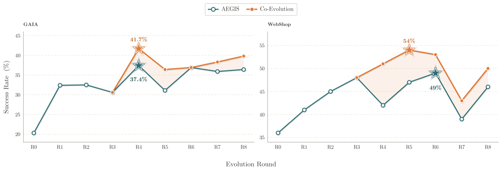

Interleaving Harness Engineering with RL: Harness–Model Co-Evolution
TL;DR
- The thread that prompted this entry is a position statement, not a paper: harness optimization moves information into an agent far faster than gradients do, so it is strange that nobody interleaves a harness proposer into the GRPO loop — because as the policy changes, the optimal harness changes with it, and we freeze the harness anyway. The empirical hook underneath it is real: GEPA ("Reflective Prompt Evolution Can Outperform Reinforcement Learning," Agrawal et al., ICLR 2026 oral, arXiv 2507.19457) beat GRPO by ~6 points on average across six tasks using up to 35× fewer rollouts (678 vs 24,000 on IFBench).
- Somebody did run the experiment. HarnessX (arXiv 2606.14249; Tingyang Chen, Shuo Lu, Kang Zhao et al.) devotes its §5 to exactly this: AEGIS harness evolution and cross-harness GRPO update from one shared replay buffer in the same iteration. Result on a Qwen3.5-9B task agent: peak success GAIA 37.4% → 41.7% and WebShop 49.0% → 54.0%, averaging +4.7% over harness-only evolution, at zero extra rollouts.
- The mechanism worth stealing is the grouping rule. Pool every trajectory of the same task into one GRPO group regardless of which harness version produced it, and the evolving harness stops being a fixed environment and becomes a structured exploration operator: each new harness version injects a distinct behavioral mode into the task's sampling distribution, and the advantage term commits the model toward whichever mode the verifier likes best.
Why this matters
The thread's core observation is an information-rate argument, easy to nod at and hard to act on. A gradient step moves a few bits into billions of parameters. A harness edit — "add a tool that filters by date," "stop truncating the tool output," "always read the test file first" — moves a whole strategy into the agent in one shot, and you can read it, diff it, and revert it. GEPA's numbers make this concrete: same task, same model, prompt evolution beat policy gradients while burning 1/35th of the rollouts.
So the natural question is not "which is better." It is: why are these two channels run in separate rooms? Almost all agentic RL fixes the scaffold and trains the weights; almost all harness optimization freezes the weights and evolves the scaffold. Each optimizes one coordinate of a pair that interacts, and the thread names the interaction exactly: as the model policy changes over time, so does the optimal harness. A tool a weak model needed spelled out becomes clutter once the model internalizes the behavior.
That interaction has a name in HarnessX: two ceilings. Harness-only evolution hits a scaffolding ceiling — once the harness exposes the right tools, context, and control flow, the binding constraint is whether the frozen model can exploit them, and no edit supplies reasoning the model lacks. Model-only RL hits a training-signal ceiling — newly acquired capabilities go unexercised when the scaffold never surfaces the context or tools that elicit them. The paper's image: the model is the cognitive core, the harness the executive apparatus, and a sharper apparatus cannot compensate for a weak core nor a stronger core for an apparatus that never calls on it.
One honesty note before going further. The thread also points at "the FST paper" as an interesting exploration of moving information from a taskset into an agent. I could not identify that paper from the thread text — no link is given and searching did not resolve it (from the thread — unverified). Everything else below is grounded in HarnessX, with Co-Harness as a second data point.
The core idea
The thread proposes interleaving. HarnessX §5 specifies what interleaving actually has to mean if it is going to be cheap.
![The harness-model co-evolution loop: a task set feeds an agent composed of a model (cognitive core) and a harness (executive apparatus); resulting trajectories with rewards enter a shared replay buffer where cross-harness grouping pools trajectories of the same task across harness versions and computes group-relative advantages; the same buffer drives two updates in parallel — AEGIS harness evolution producing an evolved harness with audit trail, and cross-harness GRPO producing an updated model policy; both feed back into the next round](assets/harness-rl-coevolution/fig1.png)
Figure 3 from HarnessX: one buffer, two updates, one set of rollouts. The orange path is exploration; the two boxes on the right consume identical data and neither reads the other's output within a round.
The naive version of "interleave harness engineering with RL" is to alternate phases: evolve the harness for a while, then train the model for a while, then repeat. That is what Co-Harness (arXiv 2607.22688; Zhengyu Chen, Teng Xiao, Huaisheng Zhu, Yige Yuan, Luan Zhang, Jingang Wang) does, and it works — an LLM-based HarnessCritic diagnoses failed trajectories and proposes validated local harness updates, then the model is fine-tuned on trajectories generated by the improved harness, distilling scaffolding into parameters. But alternating phases means each phase pays for its own rollouts.
HarnessX's move is to make them share: both updates read the same fixed-capacity replay buffer in the same iteration, neither conditioning on the other's output. Since the dominant cost of agentic RL is the rollout — model decoding plus tool calls plus verification, not the gradient step — one round of exploration funds both channels, and the model update becomes nearly free.
This also answers the two open questions the thread raises. At what granularity should an agent guide the harness? HarnessX's answer is one round = one full pass over the adaptation batch = at most one shipped edit, not per-step and not per-rollout. How quickly should you throw optimizations away? The buffer is FIFO with fixed capacity, so both model staleness and harness staleness are bounded by the same sliding window — old versions age out mechanically rather than by judgment.
How it works
The loop in one sentence. Run the agent once per round, and spend that single batch of trajectories twice — once as diagnostic evidence for an editor that rewrites the scaffold, and once as training signal for a policy gradient on the weights. Everything else is detail about how to compare runs that came from different scaffolds.
One co-evolution round, start to finish
The concrete setting is the GAIA experiment: 103 text-only tasks, a Qwen3.5-9B task agent equipped with web search, web fetch, bash, and file read, two attempts per task.
Step 1 — Run the current agent on the whole batch. The agent here is a pair: the weights as they stand, and the scaffold as it stands. An observability layer records each episode as a complete trace — every model turn, every tool call, every tool result. Nothing is summarized yet; the raw record is the shared asset the rest of the round spends.
Step 2 — Score every run with the same judge, and never change the judge. A fixed verifier turns each trace into one number: on GAIA, 0.9 × correctness plus 0.1 × format; on WebShop, the environment's own attribute-match reward, where a task passes only at a perfect score. The verifier must stay frozen for a structural reason — later steps compare runs produced by different scaffolds, and if the scoring rule drifted between versions those comparisons would be meaningless.
Step 3 — File each run in a shared bin, stamped with which scaffold produced it. The bin accumulates across rounds rather than being emptied, with fixed capacity and oldest-out eviction — on GAIA a four-round sliding window of 103 tasks × 2 attempts × 4 rounds = 824 traces. The version stamp is the load-bearing part: without it you could not later tell whether two runs of the same task differed because of luck or because the scaffold changed underneath them.
Step 4 — Let the harness editor read the bin and ship at most one change. The editor is a separate meta-agent that works in four passes. First it summarizes each task's traces down to outcome, failure category, and the components implicated — necessary because one GAIA round generates roughly 10M tokens of raw trace. Then it maps the landscape: what is still failing, what has already been tried, which kinds of edit remain untouched. That map is the defence against settling into endless prompt-rephrasing. Then it writes candidate edits, each carrying a manifest of what it touched and which tasks it expects to improve or regress. Finally it ranks the candidates — but what actually ships is decided by a deterministic gate, not by the ranking: manifest completeness, configuration normalization, smoke tests, and a regression check against previously passing tasks. Any of the first three passes may conclude there is nothing worth doing and end the round with no edit at all. (HarnessX calls this pipeline AEGIS and its stages Digester, Planner, Evolver, and Critic.)
Step 5 — Before you train on a run, record how likely the model was to produce it. This is the step that makes the whole thing work off-policy, and it happens at filing time, not at training time. For each newly added trace, one forward pass under the model checkpoint that generated it records the per-token probabilities, which are cached on disk. Runs from earlier rounds reuse the numbers cached when they were filed. Without this, a trace from three rounds ago would be untrainable, because the checkpoint that produced it no longer exists.
Step 6 — Group runs by task, across scaffolds, and take one gradient step. Every trace of the same task forms one group, no matter which scaffold or which checkpoint produced it. Each run's advantage is how much better or worse it scored than the rest of its group. Then one clipped policy-gradient step, anchored to the original model. On GAIA the whole buffer is the batch, with five training steps per round.
Step 7 — Hand both the new scaffold and the new weights to the next round. Neither update saw the other's result this round; both must finish before the next rollout begins.
The machinery behind steps 3–6
Four equations, all from §5.3.
Where a buffered trajectory came from. Each stored run is generated as
where \(\tau_i\) is the \(i\)-th trajectory in the buffer, \(x_i\) is the task it was run on, \(\mathcal{M}_k\) is the model checkpoint that produced it, \(\mathcal{H}_k\) is the harness version it ran under, \(t\) is the current round index, and \(k\) is which round the run came from. The whole point of writing this down is the subscript \(k\): the buffer is a mixture over past pairs of model and scaffold, not samples from the thing currently being updated.
The grouping rule. For a task \(x\), the group collects everything:
with \(\mathcal{B}\) the replay buffer, \(\mathcal{G}_x\) the group for task \(x\), \(\text{task}(\cdot)\) the task identifier attached to a trajectory, and the union running over every round \(k\) still in the buffer. In ordinary single-policy GRPO, variation inside a group is just sampling noise. Here, harness identity dominates that variation — different tool schemas, different prompt structures, different control flow — so the group is a comparison of strategies, not of dice rolls.
The advantage. Each run is scored relative to its group:
where \(r_i\) is the verifier reward for trajectory \(\tau_i\), \(\mu(\mathcal{G}_x)\) and \(\sigma(\mathcal{G}_x)\) are the mean and standard deviation of rewards within the group, \(\epsilon\) is a small constant preventing division by zero, and \(\hat{A}\) is the resulting advantage. This is the sentence to carry from the paper: because the group spans harness versions, the evolving scaffold supplies the exploration breadth that single-policy sampling cannot, and this advantage term is what commits the model toward the modes the verifier scores highest.
The objective. The policy is updated by maximizing
where \(\theta\) is the model's parameters, \(\pi_\theta\) the policy being updated, \(\pi_{\theta_{\text{old}}}\) the checkpoint that actually generated \(\tau_i\) (the cached numbers from Step 5), \(\rho_i\) their probability ratio, \(\epsilon_c\) the clipping threshold (0.2 in the experiments), \(\pi_{\text{ref}}\) a fixed reference model, and \(\beta\) the weight on the KL penalty holding the policy near that reference. Two distinctions matter and are easy to miss: \(\pi_{\theta_{\text{old}}}\) varies per trajectory and must be recovered from the cache, whereas \(\pi_{\text{ref}}\) is one fixed model throughout. And in the reported co-evolution runs \(\beta = 0\) — the KL anchor is written into the objective but switched off.
Alignment happens at the task level, not the action level. This is the choice that makes the whole scheme possible. Because trajectories are compared only by task identity and verifier reward, harness versions with incompatible action spaces can sit in the same group without conflict. Each trajectory is replayed under the harness version that produced it, so the model's log-probabilities are evaluated against the prompt, tool schema, and observations that version would have constructed. The gradient touches only model output tokens conditioned on harness-specific context — never harness structural actions. Harness evolution is therefore free to change the action space arbitrarily, and model training does not care.
Off-policy bias is bounded by arithmetic, not by hope. FIFO eviction caps the buffer at \(C\) trajectories, and with \(s\) samples added per round the maximum model-version lag is \(\lfloor C/s\rfloor\) rounds. Here \(C\) is buffer capacity and \(s\) is trajectories added per round. The same window bounds harness staleness, so groups mix only recent scaffolds and the model is never trained predominantly against an obsolete one.
Why this costs almost nothing extra
The economics are the reason to care. Rollouts dominate agentic RL cost; gradient steps do not. In co-evolution one round of exploration produces one set of trajectories that drives both the harness update and, by replay, the model update. GRPO issues no rollouts of its own. The marginal cost of adding model training to a harness-evolution pipeline is one cached forward pass per trajectory plus the gradient steps — both rollout-free. In the paper's words: joint optimization "buys model improvement for the price of offline training compute alone."
Where the evidence is thin
The co-evolution experiment is the smallest in the paper, and its limits should be read before its numbers.
Two benchmarks, one model, one run. GAIA and WebShop only, with a Qwen3.5-9B task agent — the weakest of the three families HarnessX tests, and the one where harness gains are largest anyway. No repeated seeds. GAIA rounds are evaluated twice and averaged because web-tool latency fluctuates, which helps but is not a seed replicate.
Nothing is held out — anywhere in the paper. HarnessX states this plainly: "All reported gains are measured on the same task set used for evolution; held-out generalization to unseen tasks is not evaluated in this work." That applies to the headline +14.5% and the co-evolution +4.7% alike, and it is exactly the confound that "Rethinking Harness Evolution" built a paper around.
The peak comparison lands on the first round where the curves diverge. The two conditions are identical through round 3 — joint training only engages at round 4 — and GAIA's reported peak gap (41.7 vs 37.4) is measured exactly there. That is one data point, not a trend. The better evidence is that the gap survives: at the final round, GAIA 36.4% → 39.8% and WebShop 46.0% → 50.0%.
The KL anchor is off and the buffer is small. \(\beta = 0\) with 5 training steps per round on 824 (GAIA) or 400 (WebShop) traces leaves very little regularization against drift; the FIFO window does all the work of keeping the policy near its data.
The authors name the deployment blocker themselves. Co-evolution requires joint control over harness evolution and model training, and in practice those live in different teams or organizations — making a shared replay buffer impractical without coordination that mostly does not exist.
# Harness-model co-evolution, one iteration (HarnessX Section 5.1)
B <- fixed-capacity FIFO replay buffer
for t = 0, 1, 2, ...:
# ---- one set of rollouts, spent twice ----
traces <- run(model_t, harness_t, task_batch_t) # the only environment cost
for tau in traces:
r <- fixed_verifier(tau) # judge never changes across versions
logp <- forward_pass(model_t, tau) # cache NOW; model_t won't exist later
B.push(tau, r, logp, version=harness_t) # oldest evicted; window bounds staleness
# ---- channel 1: non-parametric (structure) ----
evidence <- Digester(B) # ~10M raw tokens -> per-task summaries
landscape <- Planner(evidence) # what failed, what's been tried
cands <- Evolver(harness_t, landscape) # typed edits + change manifests
ranked <- Critic(cands, evidence) # LLM judgement proposes
harness_next <- first candidate passing DeterministicGate(...) # gate disposes
# gate = manifest complete + config normalized + smoke test + no regression
# ---- channel 2: parametric (behavior) ----
for each task x in B:
G_x <- all traces of x, ANY harness version # cross-harness grouping
A(tau) <- (r - mean(G_x)) / (std(G_x) + eps) # scaffold diversity = exploration
model_next <- clipped_policy_gradient(model_t, B, A) # replay only; zero new rollouts
model_t, harness_t <- model_next, harness_next # neither saw the other this round
Results
- Harness evolution alone (AEGIS, model frozen): improves 14 of 15 model–benchmark configurations across GAIA, ALFWorld, WebShop, τ³-Bench, and SWE-bench Verified, with three task-agent families (Claude Sonnet 4.6, GPT-5.4, Qwen3.5-9B) and Opus 4.6 as meta-agent. Average +14.5%, maximum +44.0% (ALFWorld with Qwen3.5-9B: 53.0% → 97.0% pass@2). Gains are largest where baselines are lowest.
- Co-evolution vs harness-only, Qwen3.5-9B: peak GAIA 37.4% → 41.7% (+4.3) and WebShop 49.0% → 54.0% (+5.0), averaging +4.7%. The gap persists to the final round (GAIA 36.4% → 39.8%, WebShop 46.0% → 50.0%) and is wider on WebShop, where more headroom remained beyond the harness-only plateau.

Figure 5 from HarnessX: the two conditions share the same trajectory until joint training engages at round 4, then separate. Note how noisy both curves are round-to-round — the WebShop dip at R7 is larger than the effect being claimed.
- The ceilings are visible in the curves. Harness-only plateaus around 37% on GAIA and 49% on WebShop; co-evolution clears both. The paper's reading is that cross-harness GRPO lets the model internalize strategies successive harness versions introduce, so later edits build on learned behavior instead of compensating for a fixed model's limits.
- Failure modes are reported, not hidden. One configuration stagnated entirely (GAIA with GPT-5.4, Δ = 0.0), attributed to single-harness evolution on a heterogeneous task set and fixed by maintaining several harness variants and routing tasks between them. One regressed −14.0% at round 7 (τ³-Bench Telecom) from accumulated same-type edits, recovering by round 9.
- Independent instantiations. Co-Harness reports that alternating harness optimization with fine-tuning on trajectories from the improved harness beats fixed-harness post-training, including a 200+ hour autonomous case study in which the system recovered from crashes and discovered ensemble strategies unaided. A third system, SIA ("Self Improving AI with Harness & Weight Updates," arXiv 2605.27276), pursues the same joint objective. Three groups converging on this structure within a year is the real signal.
How it connects
- EvoHarness-RL — the closest relative, and instructive precisely because it co-evolves along a different axis. EvoHarness-RL keeps the harness structure fixed and uses cost-aware GRPO to train when the model should touch harness state (
track,commit,recall,note), producing "harness annealing": calls drop toward ~1/episode as routines get internalized into weights. HarnessX trains the model while the harness structure itself changes underneath it. Put together they describe both halves of the thread's claim — the harness teaches the model, and the model then needs the harness less. - Training Agents in Harnesses (OpenForgeRL) — the infrastructure prerequisite. Before you can co-evolve, you need to run RL with real, stateful, multi-process harnesses in the loop, which open RL stacks could not express; OpenForgeRL's proxy-plus-orchestrator design is how that becomes possible. Its incidental finding is directly relevant here: harness choice is a training variable, some harnesses being substantially harder to learn than others — which is the thread's "optimal harness depends on the policy" claim observed from the training side.
- Rethinking Harness Evolution — the standing challenge to every number above: harness evolution loses to plain test-time scaling under matched budgets, and evolved harnesses gain only +0.6 on average on held-out tasks because edits "memorize fixes rather than distilling strategies." HarnessX evolves and reports on the same task set throughout, so it does not answer that. The open question is whether co-evolution changes the answer — a strategy distilled into weights cannot be a memorized per-task patch in the scaffold, so the model channel might launder scaffold overfitting into genuine capability. Untested.
- Keeping Harness Patches (AutoSaddler) — the direct complement, and the one to read next. AutoSaddler shows that automatic harness patching without a held-out generalization check lands below the hand-written harness it started from (50.6% vs 53.0%), while HarnessX's deterministic gate checks regression against previously seen tasks only. HarnessX shows what a second optimization channel buys you; AutoSaddler shows what the first costs you if you skip the validation split.
- Harness-R1 — the third possible place to put the gradient. HarnessX trains the task model while an untrained meta-agent edits the harness; Harness-R1 freezes the task model and trains the editor with GRPO on realized success change, and its related-work section names HarnessX among systems where "the harness proposer usually remains fixed." Three channels now exist — train the actor, train the editor, edit the scaffold — and nobody has run all three at once.
Critical take
The thread is right that this is underexplored, and HarnessX shows it is also underexplored in the paper that explores it. The co-evolution study is two benchmarks, one 9B model, one run, no held-out set, with the headline peak measured at the very first round where the conditions diverge — and in Figure 5 the round-to-round noise in both curves is comparable to the +4.7% being claimed. A skeptic could read those curves as one lucky round plus a modest persistent offset, and the paper supplies no seeds to settle it. Nor is the thread's actual proposal tested: HarnessX uses AEGIS, its own four-stage evolver, not GEPA, so the specific claim that a reflective prompt optimizer is the right proposer inside a GRPO loop remains unrun.
What is genuinely strong is the engineering, in the way that survives a weak experiment. Cross-harness grouping is the right primitive: it makes trajectories from mutually incompatible action spaces comparable by refusing to align anything but task identity and verifier reward, which is what lets the scaffold change arbitrarily without breaking the gradient. Caching behavior log-probabilities at insertion is the right implementation detail, because it is the only way a trace outlives the checkpoint that made it. And the cost argument is close to unassailable — if you are already paying for harness-evolution rollouts, the model update is nearly free, so the burden of proof arguably shifts to anyone running harness evolution without it. HarnessX has built a correct and cheap mechanism and demonstrated it at a scale that cannot yet distinguish +4.7% from noise. That is a reasonable place for a systems paper to be; it is not yet evidence that co-evolution is the route past either ceiling.
If you remember three things
- Two ceilings, one buffer. Harness-only evolution stalls at the scaffolding ceiling (the frozen model cannot exploit better tools); model-only RL stalls at the training-signal ceiling (the frozen scaffold never elicits new capabilities). Running both updates off one shared replay buffer attacks both, and because rollouts dominate agentic RL cost while gradient steps do not, the second channel is nearly free.
- Cross-harness grouping turns your scaffold into an exploration operator. Pool all trajectories of a task into one GRPO group regardless of which harness version produced them; the advantage \(\hat{A}(\tau_i) = (r_i - \mu(\mathcal{G}_x))/(\sigma(\mathcal{G}_x)+\epsilon)\) then compares strategies rather than dice rolls, and each new harness version injects a behavioral mode the model can be pushed toward. Alignment is by task identity and reward only, so incompatible action spaces coexist.
- The evidence is thinner than the idea. +4.7% on two benchmarks, one 9B model, one run, no held-out set anywhere in the paper, and the peak measured at the first divergent round. The mechanism deserves to be copied; the number does not yet deserve to be quoted without its error bars — which do not exist.